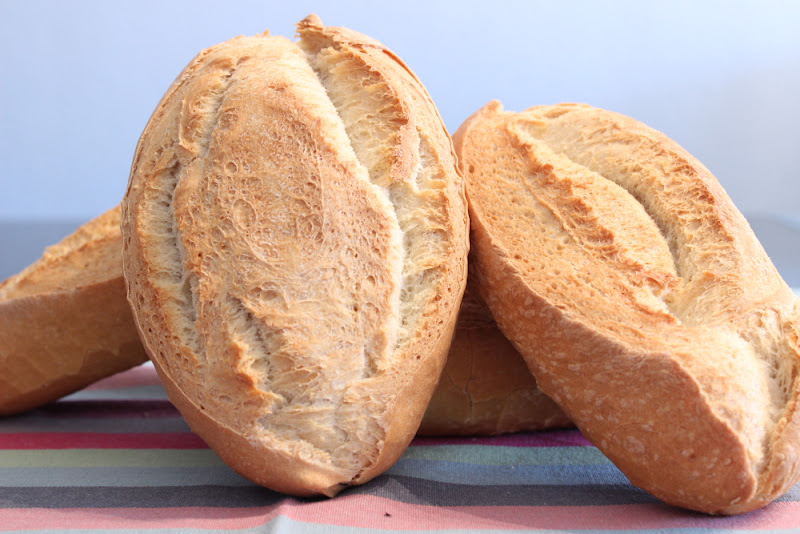

Bollo is a traditional Colombian bun that can be made with corn, yuca, or potatoes. The bun is also very popular in Panama in Spain. Typically, it is served for breakfast, when it is accompanied by cheese on the side. All along the Colombian coast, bollo can be bought from numerous street vendors who are selling it freshly prepared from corn leaves in which the buns were wrapped before cooking.
Meal prep time : 55 minutes
Servings : 6